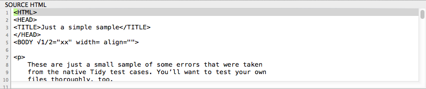
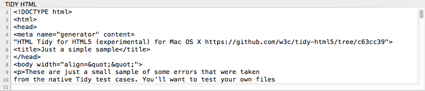
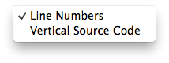
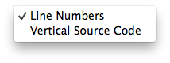

The Source Code Area
Balthisar Tidy’s source code area consists of two panels for displaying HTML or XML source code.
The Source HTML panel is where you see and (if wanted) edit the original file.

The Tidy HTML panel display the results of the Tidying operation using all of the settings that you’ve specified in the Tidy Options panel.

The orientation of the entire source code area can be changed to suit your preference, which gives you the choice to see your HTML Source and the Tidy HTML in an over-under orientation or in a side-by-side configuration.
You can change the orientation in the View menu’s Source Code submenu.
 

You can also change the orientation using the toolbar’s Orient button.